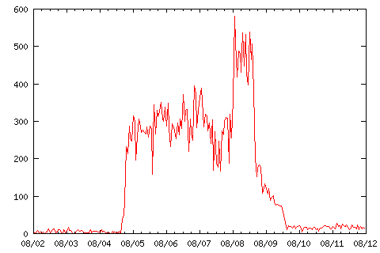

What is backscatter mail? From postfix.org:
When a spammer or worm sends mail with forged sender addresses, innocent sites are flooded with undeliverable mail notifications. This is called backscatter mail, and if your system is flooded then you will find out soon enough.
I actually first noticed on August 5 2004 due to the increased amount of spam that was being caught. I then checked the logs and noticed mail had gone from the 100 or so emails I get a day to thousands of emails! Below is a graph of the hourly deliveries around the event.

On the sixth I really just spent the evening working out what was going on. I had never heard of backscatter mail before. On the seventh I attempted to change my email server from qmail to postfix, but the attempt was made in haste and too many issues sprung up. After half an hour, I went back to qmail. Note that this was *not*, repeat *not*, a problem with postfix. I just tried to do too much too fast.
One of my email policy decisions was causing me a lot of grief. Qmail allows you to define a default user who gets all of the mail from unknown users. I had the default pointing to my account. There are many advantages to this:
However, all the email was swamping me (even with bogofilter. So I bit the bullet and created all the aliases I could remember or find and removed the default alias. This caused the spike on August 8. All the backscatter was being bounced back to the originators, who then tended to bounce it back to me! I actually made the problem worse. So I added the default user back.
I then stumbled upon Paul Jarc's qmail-realrcptto patch. This patch is well described on his page, but basically it drops all mail to unknown users up front, before the body of the message has been read. The mail is dropped, not bounced. Once I had this patch in place, I dropped the default alias and had peace.
By the time I added Paul Jarc's patch, the email was already dropping off. While I still have more email coming in than before, it is now manageable.
All programmers are optimists - Fred Brooks
While I wish it hadn't happened, there was a upside to all of this.
Contact Sean MacLennan